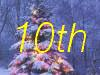

GD.pm - Interface to Gd Graphics Library
use GD;
# create a new image
$im = new GD::Image(100,100);
# allocate some colors
$white = $im->colorAllocate(255,255,255);
$black = $im->colorAllocate(0,0,0);
$red = $im->colorAllocate(255,0,0);
$blue = $im->colorAllocate(0,0,255);
# make the background transparent and interlaced
$im->transparent($white);
$im->interlaced('true');
# Put a black frame around the picture
$im->rectangle(0,0,99,99,$black);
# Draw a blue oval
$im->arc(50,50,95,75,0,360,$blue);
# And fill it with red
$im->fill(50,50,$red);
# make sure we are writing to a binary stream
binmode STDOUT;
# Convert the image to PNG and print it on standard output
print $im->png;
GD.pm is a port of Thomas Boutell's gd graphics library (see below). GD allows you to create color drawings using a large number of graphics primitives, and emit the drawings as PNG files.
GD defines the following three classes:
GD::ImageGD::FontGD::PolygonA Simple Example:
#!/usr/local/bin/perl
use GD;
# create a new image
$im = new GD::Image(100,100);
# allocate some colors
$white = $im->colorAllocate(255,255,255);
$black = $im->colorAllocate(0,0,0);
$red = $im->colorAllocate(255,0,0);
$blue = $im->colorAllocate(0,0,255);
# make the background transparent and interlaced
$im->transparent($white);
$im->interlaced('true');
# Put a black frame around the picture
$im->rectangle(0,0,99,99,$black);
# Draw a blue oval
$im->arc(50,50,95,75,0,360,$blue);
# And fill it with red
$im->fill(50,50,$red);
# make sure we are writing to a binary stream
binmode STDOUT;
# Convert the image to PNG and print it on standard output
print $im->png;
Notes:
new() message to GD::Image, passing
it the width and height of the image you want to create. An image
object will be returned. Other class methods allow you to initialize
an image from a preexisting PNG, GD or XBM file.colorAllocate() method call. The three
parameters in each call are the red, green and blue (rgb) triples for
the desired color. The method returns the index of that color in the
image's color table. You should store these indexes for later use.new() message to GD::Polygon. You can add
points to the returned polygon one at a time using the addPt() method.
The polygon can then be passed to an image for rendering.png() message. It will return a (potentially large)
scalar value containing the binary data for the image. Ordinarily you
will print it out at this point or write it to a file. To ensure
portability to platforms that differentiate between text and binary
files, be sure to call binmode() on the file you are writing
the image to.
The following class methods allow you to create new GD::Image objects.
new() method is the main constructor for the GD::Image class.
Called with two integer arguments, it creates a new blank image of the
specified width and height. For example:
$myImage = new GD::Image(100,100) || die;
This will create an image that is 100 x 100 pixels wide. If you don't specify the dimensions, a default of 64 x 64 will be chosen.
Alternatively, you may create a GD::Image object based on an existing image by providing an open filehandle, a filename, or the image data itself. The image formats automatically recognized and accepted are: PNG, JPEG, XPM and GD2. Other formats, including GIF, WBMP, and GD version 1, cannot be recognized automatically at this time.
If something goes wrong (e.g. insufficient memory), this call will return undef.
newFromPng() method will create an image from a PNG file read in
through the provided filehandle or file path. The filehandle must
previously have been opened on a valid PNG file or pipe. If
successful, this call will return an initialized image which you can
then manipulate as you please. If it fails, which usually happens if
the thing at the other end of the filehandle is not a valid PNG file,
the call returns undef. Notice that the call doesn't automatically
close the filehandle for you. But it does call binmode(FILEHANDLE)
for you, on platforms where this matters.
You may use any of the following as the argument:
1) a simple filehandle, such as STDIN 2) a filehandle glob, such as *PNG 3) a reference to a glob, such as \*PNG 4) an IO::Handle object 5) the pathname of a file
In the latter case, newFromPng() will attempt to open the file for you
and read the PNG information from it.
Example1:
open (PNG,"barnswallow.png") || die; $myImage = newFromPng GD::Image(\*PNG) || die; close PNG;
Example2:
$myImage = newFromPng GD::Image('barnswallow.png');
To get information about the size and color usage of the information, you can call the image query methods described below.
The newFromPngData() method will create a new GD::Image initialized
with the PNG format data contained in $data.
newFromPng() and newFromPngData(), and will accept the same
filehandle and pathname arguments.
Bear in mind that JPEG is a 24-bit format, while GD is 8-bit. This means that photographic images will become posterized.
newFromPng, but reads the
contents of an X Bitmap (black & white) file:
open (XBM,"coredump.xbm") || die;
$myImage = newFromXbm GD::Image(\*XBM) || die;
close XBM;
There is no newFromXbmData() function, because there is no
corresponding function in the gd library.
newFromWMPData() method.
$myImage = newFromGd GD::Image("godzilla.gd") || die;
close GDF;
newFromGd() and
newFromGdData, but use the new compressed GD2 image format.
open (GDF,"godzilla.gd2") || die;
$myImage = GD::Image->newFromGd2Part(\*GDF,10,20,100,100) || die;
close GDF;
This reads a 100x100 square portion of the image starting from position (10,20).
newFrom() functions because it does not take a
filehandle. This difference comes from an inconsistency in the
underlying gd library.
$myImage = newFromXpm GD::Image('earth.xpm') || die;
This function is only available if libgd was compiled with XPM support.
NOTE: The libgd library is unable to read certain XPM files, returning an all-black image instead.
Once a GD::Image object is created, you can draw with it, copy it, and merge two images. When you are finished manipulating the object, you can convert it into a standard image file format to output or save to a file.
The following methods convert the internal drawing format into standard output file formats.
$png_data = $myImage->png;
open (DISPLAY,"| display -") || die;
binmode DISPLAY;
print DISPLAY $png_data;
close DISPLAY;
Note the use of binmode(). This is crucial for portability to
DOSish platforms.
jpeg() in order to control the JPEG quality.
This should be an integer between 0 and 100. Higher quality scores
give larger files and better image quality. If you don't specify the
quality, jpeg() will choose a good default.
binmode MYOUTFILE;
print MYOUTFILE $myImage->gd;
These methods allow you to control and manipulate the GD::Image color table.
If no colors are allocated, then this function returns -1.
Example:
$white = $myImage->colorAllocate(0,0,0); #background color
$black = $myImage->colorAllocate(255,255,255);
$peachpuff = $myImage->colorAllocate(255,218,185);
Example:
$myImage->colorDeallocate($peachpuff);
$peachy = $myImage->colorAllocate(255,210,185);
Example:
$apricot = $myImage->colorClosest(255,200,180);
$rosey = $myImage->colorExact(255,100,80);
warn "Everything's coming up roses.\n" if $rosey >= 0;
$rosey = $myImage->colorResolve(255,100,80);
warn "Everything's coming up roses.\n" if $rosey >= 0;
$maxColors = $myImage->colorsTotal;
rgb()
to obtain the rgb color underneath the pixel.
Example:
$index = $myImage->getPixel(20,100);
($r,$g,$b) = $myImage->rgb($index);
Example:
@RGB = $myImage->rgb($peachy);
If you call this method without any parameters, it will return the current index of the transparent color, or -1 if none.
Example:
open(PNG,"test.png");
$im = newFromPng GD::Image(PNG);
$white = $im->colorClosest(255,255,255); # find white
$im->transparent($white);
binmode STDOUT;
print $im->png;
GD implements a number of special colors that can be used to achieve special effects. They are constants defined in the GD:: namespace, but automatically exported into your namespace when the GD module is loaded.
To make a brushed line, you must create or load the brush first, then assign it to the image using setBrush(). You can then draw in that with that brush using the gdBrushed special color. It's often useful to set the background of the brush to transparent so that the non-colored parts don't overwrite other parts of your image.
Example:
# Create a brush at an angle
$diagonal_brush = new GD::Image(5,5);
$white = $diagonal_brush->allocateColor(255,255,255);
$black = $diagonal_brush->allocateColor(0,0,0);
$diagonal_brush->transparent($white);
$diagonal_brush->line(0,4,4,0,$black); # NE diagonal
# Set the brush
$myImage->setBrush($diagonal_brush);
# Draw a circle using the brush
$myImage->arc(50,50,25,25,0,360,gdBrushed);
setStyle() to specify a repeating series of colors. It
accepts an array consisting of one or more color indexes. Then draw
using the gdStyled special color. Another special color,
gdTransparent can be used to introduce holes in the line, as the
example shows.
Example:
# Set a style consisting of 4 pixels of yellow,
# 4 pixels of blue, and a 2 pixel gap
$myImage->setStyle($yellow,$yellow,$yellow,$yellow,
$blue,$blue,$blue,$blue,
gdTransparent,gdTransparent);
$myImage->arc(50,50,25,25,0,360,gdStyled);
To combine the gdStyled and gdBrushed behaviors, you can specify
gdStyledBrushed. In this case, a pixel from the current brush
pattern is rendered wherever the color specified in setStyle() is
neither gdTransparent nor 0.
setTile in order to define the particular tile pattern you'll use
for drawing when you specify the gdTiled color.
details.
setStyled() command.
These methods allow you to draw lines, rectangles, and elipses, as well as to perform various special operations like flood-fill.
Example:
# This assumes $peach already allocated
$myImage->setPixel(50,50,$peach);
Example:
# Draw a diagonal line using the currently defind
# paintbrush pattern.
$myImage->line(0,0,150,150,gdBrushed);
setStyle() method described below and to draw with
the special color gdStyled.
Example:
$myImage->dashedLine(0,0,150,150,$blue);
Example:
$myImage->rectangle(10,10,100,100,$rose);
Example:
# read in a fill pattern and set it
$tile = newFromPng GD::Image('happyface.png');
$myImage->setTile($tile);
# draw the rectangle, filling it with the pattern
$myImage->filledRectangle(10,10,150,200,gdTiled);
Example:
$poly = new GD::Polygon;
$poly->addPt(50,0);
$poly->addPt(99,99);
$poly->addPt(0,99);
$myImage->polygon($poly,$blue);
Example:
# make a polygon
$poly = new GD::Polygon;
$poly->addPt(50,0);
$poly->addPt(99,99);
$poly->addPt(0,99);
# draw the polygon, filling it with a color
$myImage->filledPolygon($poly,$peachpuff);
You can specify a normal color or one of the special colors gdBrushed, gdStyled, or gdStyledBrushed.
Example:
# draw a semicircle centered at 100,100
$myImage->arc(100,100,50,50,0,180,$blue);
Example:
# Draw a rectangle, and then make its interior blue
$myImage->rectangle(10,10,100,100,$black);
$myImage->fill(50,50,$blue);
fill, this method flood-fills regions with the specified
color, starting at position (x,y). However, instead of stopping when
it hits a pixel of a different color than the starting pixel, flooding
will only stop when it hits the color specified by bordercolor. You
must specify a normal indexed color for the bordercolor. However, you
are free to use the gdTiled color for the fill.
Example:
# This has the same effect as the previous example
$myImage->rectangle(10,10,100,100,$black);
$myImage->fillToBorder(50,50,$black,$blue);
Two methods are provided for copying a rectangular region from one image to another. One method copies a region without resizing it. The other allows you to stretch the region during the copy operation.
With either of these methods it is important to know that the routines will attempt to flesh out the destination image's color table to match the colors that are being copied from the source. If the destination's color table is already full, then the routines will attempt to find the best match, with varying results.
Example:
$myImage = new GD::Image(100,100);
... various drawing stuff ...
$srcImage = new GD::Image(50,50);
... more drawing stuff ...
# copy a 25x25 pixel region from $srcImage to
# the rectangle starting at (10,10) in $myImage
$myImage->copy($srcImage,10,10,0,0,25,25);
Example:
$myImage = new GD::Image(100,100);
... various drawing stuff ...
$copy = $myImage->clone;
copy() -- replacing the destination pixels with the source
image. This is most useful for highlighting an area by merging in a
solid rectangle.
Example:
$myImage = new GD::Image(100,100);
... various drawing stuff ...
$redImage = new GD::Image(50,50);
... more drawing stuff ...
# copy a 25x25 pixel region from $srcImage to
# the rectangle starting at (10,10) in $myImage, merging 50%
$myImage->copyMerge($srcImage,10,10,0,0,25,25,50);
copyMerge() except that it preserves the hue of
the source by converting all the pixels of the destination rectangle
to grayscale before merging.
copy() but allows you to choose different
sizes for the source and destination rectangles. The source and
destination rectangle's are specified independently by (srcW,srcH) and
(destW,destH) respectively. copyResized() will stretch or shrink the
image to accomodate the size requirements.
Example:
$myImage = new GD::Image(100,100);
... various drawing stuff ...
$srcImage = new GD::Image(50,50);
... more drawing stuff ...
# copy a 25x25 pixel region from $srcImage to
# a larger rectangle starting at (10,10) in $myImage
$myImage->copyResized($srcImage,10,10,0,0,50,50,25,25);
Gd allows you to draw characters and strings, either in normal horizontal orientation or rotated 90 degrees. These routines use a GD::Font object, described in more detail below. There are four built-in fonts, available in global variables gdGiantFont, gdLargeFont, gdMediumBoldFont, gdSmallFont and gdTinyFont. Currently there is no way of dynamically creating your own fonts.
Example:
$myImage->string(gdSmallFont,2,10,"Peachy Keen",$peach);
The arguments are as follows:
fgcolor Color index to draw the string in fontname An absolute or relative path to the TrueType (.ttf) font file ptsize The desired point size (may be fractional) angle The rotation angle, in radians x,y X and Y coordinates to start drawing the string string The string itself
If successful, the method returns an eight-element list giving the boundaries of the rendered string:
@bounds[0,1] Lower left corner (x,y) @bounds[2,3] Lower right corner (x,y) @bounds[4,5] Upper right corner (x,y) @bounds[6,7] Upper left corner (x,y)
In case of an error (such as the font not being available, or TTF support not being available), the method returns an empty list and sets $@ to the error message.
You may also call this method from the GD::Image class name, in which case it doesn't do any actual drawing, but returns the bounding box using an inexpensive operation. You can use this to perform layout operations prior to drawing.
These are various utility methods that are useful in some circumstances.
GD_CMP_IMAGE The two images look different GD_CMP_NUM_COLORS The two images have different numbers of colors GD_CMP_COLOR The two images' palettes differ GD_CMP_SIZE_X The two images differ in the horizontal dimension GD_CMP_SIZE_Y The two images differ in the vertical dimension GD_CMP_TRANSPARENT The two images have different transparency GD_CMP_BACKGROUND The two images have different background colors GD_CMP_INTERLACE The two images differ in their interlace
The most important of these is GD_CMP_IMAGE, which will tell you whether the two images will look different, ignoring differences in the order of colors in the color palette and other invisible changes. The constants are not imported by default, but must be imported individually or by importing the :cmp tag. Example:
use GD qw(:DEFAULT :cmp);
# get $image1 from somewhere
# get $image2 from somewhere
if ($image1->compare($image2) & GD_CMP_IMAGE) {
warn "images differ!";
}
A few primitive polygon creation and manipulation methods are provided. They aren't part of the Gd library, but I thought they might be handy to have around (they're borrowed from my qd.pl Quickdraw library).
$poly = new GD::Polygon;
$poly->addPt(0,0);
$poly->addPt(0,50);
$poly->addPt(25,25);
$myImage->fillPoly($poly,$blue);
($x,$y) = $poly->getPt(2);
$poly->setPt(2,100,100);
($x,$y) = $poly->deletePt(1);
$poly->addPt(0,0);
$poly->toPt(0,50);
$poly->toPt(25,-25);
$myImage->fillPoly($poly,$blue);
$points = $poly->length;
@vertices = $poly->vertices;
foreach $v (@vertices)
print join(",",@$v),"\n";
}
($left,$top,$right,$bottom) = $poly->bounds;
$poly->offset(10,30);
# Make the polygon really tall
$poly->map($poly->bounds,0,0,50,200);
scale(2,2) will make the polygon twice as
large. For best results, move the center of the polygon to position
(0,0) before you scale, then move it back to its previous position.
The libgd library (used by the Perl GD library) has built-in support
for about half a dozen fonts, which were converted from public-domain
X Windows fonts. For more fonts, compile libgd with TrueType support
and use the stringTTF() call.
If you wish to add more built-in fonts, the directory bdf_scripts contains two contributed utilities that may help you convert X-Windows BDF-format fonts into the format that libgd uses internally. However these scripts were written for earlier versions of GD which included its own mini-gd library. These scripts will have to be adapted for use with libgd, and the libgd library itself will have to be recompiled and linked! Please do not contact me for help with these scripts: they are unsupported.
Each of these fonts is available both as an imported global (e.g. gdSmallFont) and as a package method (e.g. GD::Font->Small).
print "The large font contains ",gdLargeFont->nchars," characters\n";
height($w,$h) = (gdLargeFont->width,gdLargeFont->height);
libgd, the C-language version of gd, can be obtained at URL http://www.boutell.com/gd/. Directions for installing and using it can be found at that site. Please do not contact me for help with libgd.
The GD.pm interface is copyright 1995-2000, Lincoln D. Stein. It is distributed under the same terms as Perl itself. See the ``Artistic License'' in the Perl source code distribution for licensing terms.
The latest versions of GD.pm are available at
http://stein.cshl.org/WWW/software/GD
Image::Magick